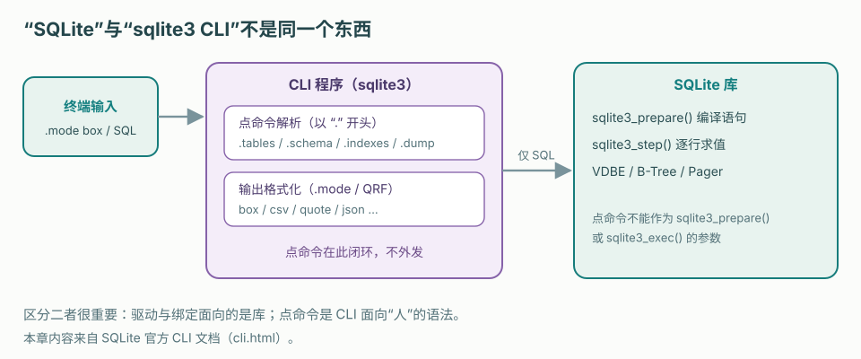
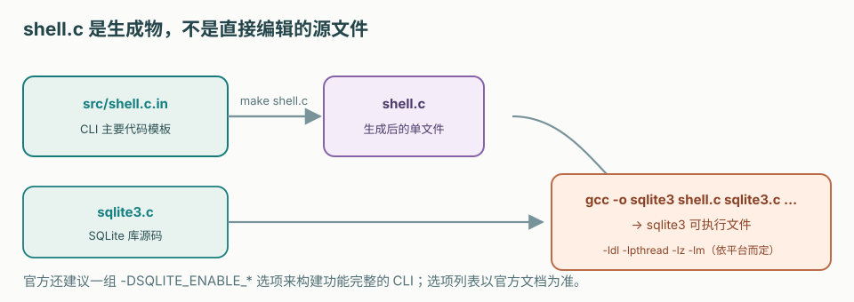

CLI shell 源码：点命令、结果格式化与编译路径
sqlite3 命令行程序与原库是两层：点命令由 CLI 自己解析、结果由 .mode 与 QRF 格式化。理解这些边界，才知道哪些命令能进库接口、哪些不能。
1. “SQLite”和“sqlite3 命令”是同一件事吗？
不是。官方文档明确指出：SQLite 库是实现数据库引擎的代码；sqlite3 命令行程序（CLI）是一个接收输入、把 SQL 交给库求值的应用。二者名字相近，但职责不同。当你写 sqlite3_prepare() 时面对的是库；当你敲 .tables 时面对的是 CLI。

sqlite3_prepare()/sqlite3_step()。这个区分有实际后果：驱动、ORM、脚本使用的都是“库”的接口，因此它们天生看不懂点命令。你不应该把 .mode box 这种东西塞进 sqlite3_exec()——它只会被当成语法错误。
2. 点命令由 CLI 解析，不进库接口
官方文档把点命令（dot-commands）定义为 CLI 的“特殊命令”，并强调它们不会被 SQL 解析器处理，也不能作为 sqlite3_prepare() 或 sqlite3_exec() 的参数。它们面向的是“人”，不是“程序”。
很多点命令只是把常见查询包装成快捷方式。例如 .tables 近似于：
SELECT name FROM sqlite_schema
WHERE type IN ('table','view') AND name NOT LIKE 'sqlite_%'
ORDER BY 1; -- .tables 还会覆盖所有已附加的数据库，并排成多列| 点命令 | 干什么 |
|---|---|
.tables | 列出表/视图（跨所有附加库，列对齐） |
.schema [tbl] | 打印整个库（或单表）的建表/建索引语句 |
.indexes [tbl] | 列出索引；带表名时只看该表 |
.indexes --expr | 只列出表达式索引（3.53.0+） |
注意最后一行与上一章的呼应：表达式索引与普通索引在元数据里同属 sqlite_schema，需要用 .indexes --expr 才能方便地筛出来。
3. .mode 与 QRF：结果如何排版
查询结果的排版由 .mode 控制，与 SQL 语法无关。官方的快速例子包括 .mode box（Unicode 框线）、.mode quote（SQL 字面量）、.mode csv。.mode --list 列出全部模式，.mode 显示当前模式，.mode --once box 只对下一条语句临时生效。
.mode --list -- 列出可用输出模式
.mode -- 显示当前模式（无参数）
.mode --once box -- 只把下一条语句按 box 输出，然后恢复原模式3.53.0（2026-04-09）引入了 QRF（Query Result Formatter）库，用于把查询结果排版得更好读：交互式会话默认用 Unicode 框线输出，数值在表格模式下默认右对齐；批量会话保留旧格式以兼容。
QRFormatter 结构体字段、qrf_add_row()/xRender 回调，以及“3.54.0 流式渲染优化”。这些无官方依据。可查证的只是：3.53.0 新增 QRF 并改进了 CLI 格式化行为，具体内部实现以源码为准。4. .dump、.import 与脚本化用法
.dump 把整个数据库导出为一个 UTF-8 的 SQL 文本文件；它可以被重新管回 sqlite3 来重建数据库，因此很适合做归档：
sqlite3 ex1 .dump | gzip -c > ex1.dump.gz # 归档
zcat ex1.dump.gz | sqlite3 ex2 # 重建
sqlite3 ex1 .dump | psql ex2 # 导出成其他引擎的 SQL与之对应，.recover 用于从损坏数据库中抢救数据；.import 把 CSV 或其他分隔格式导入表；.output/.read 分别重定向输出与读取 SQL 脚本。
在 shell 脚本里用 sqlite3 时，最直接的用法是把它当“一次性执行器”：把数据库名与一条 SQL 作为两个参数传入，它执行后用 list 模式打印结果并退出。这在管道里很像一个命令行工具：
sqlite3 ex1 'SELECT count(*) FROM tbl1'
# 两参数形式：执行、list 模式输出、退出，适合与 awk/sed 组合5. shell.c 的生成与编译路径
CLI 的源码主体在 src/shell.c.in，它是一个模板：最终的 shell.c 是生成物，在官方源码树里用 make shell.c 重新生成，再与库源码一起编译：
make shell.c
# 或手工编译（依平台调整链接选项）
gcc -o sqlite3 shell.c sqlite3.c -ldl -lpthread -lz -lm
shell.c 是生成物；调制 CLI 的入口是 src/shell.c.in，而不是直接改一个手写源文件。官方还建议一组编译选项来得到功能完整的 CLI（如 -DSQLITE_ENABLE_EXPLAIN_COMMENTS、-DSQLITE_ENABLE_FTS5、-DSQLITE_ENABLE_JSON1 等），完整列表以官方文档为准。
aDotCommands[] 回调数组分发、用私有函数 sqlite3_import() 实现 .import，以及“在 shell_extra.c 里追加自定义命令”的模式。这些均无官方依据，属于推测。可验证的事实只有：源码位于 src/shell.c.in，shell.c 由其生成后编译；其余内部函数名与行数不应被当成跨版本不变量。6. 可运行实验
examples/23_cli.sql 把 .tables、.indexes、.schema 背后的等价 SQL 写成可执行脚本，用标准库 sqlite3 跑一遍，验证“点命令只是便捷查询”的说法。
python3 -c "import sqlite3; sqlite3.connect(':memory:').executescript(open('examples/23_cli.sql').read()); print('cli-equiv SQL ok')"
# 正常完成：cli-equiv SQL ok（同时已纳入 scripts/test_examples.py 的自动断言）要注意：这些 SQL 能在库接口里运行，而 .tables 等点命令不行。这正是图 1 要强调的边界——如果你想在程序里“执行点命令”，答案是：做不到，应当改用等价的 SQL 或库 API。
可重复练习
- 在 CLI 里分别执行
.tables与等价的SELECT，对照输出差异（多列排序、跨附加库）； - 用
.mode --list观察可用模式，再用.mode --once box验证“仅下一条语句生效”； - 用
.dump导出一个内存库到文件，再把它管回一个新的 sqlite3 进程验证可重建。
自测：为什么点命令不能作为 sqlite3_exec() 的参数？
因为点命令由 CLI 程序自己解析，根本不会进入 SQL 解析器；sqlite3_exec() 面向的是库，只能接收 SQL 文本，遇到以 . 开头的文本只会报语法错误。
原始资料与版本边界
本章命令与行为均来自 SQLite 官方 CLI 文档与 3.53.0 发布说明；具体的选项、模式与输出格式随版本演化，应以官方文档与本机 CLI 的 .mode --list、.help 为准。
- Command Line Shell For SQLite · SQLite 官方
- SQLite Release History（3.53.0，QRF） · SQLite 官方
- Stale Expression Indexes（.indexes --expr） · SQLite 官方